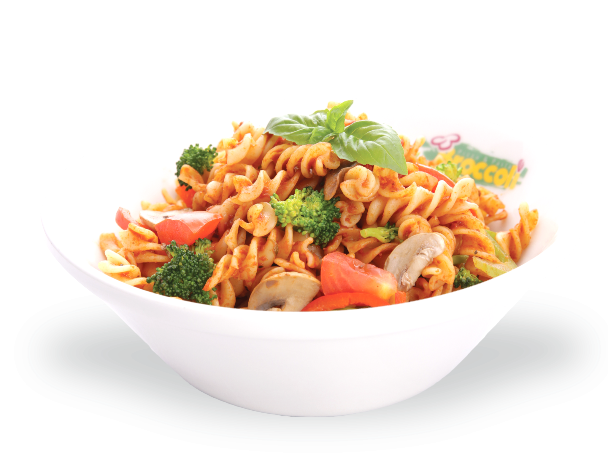
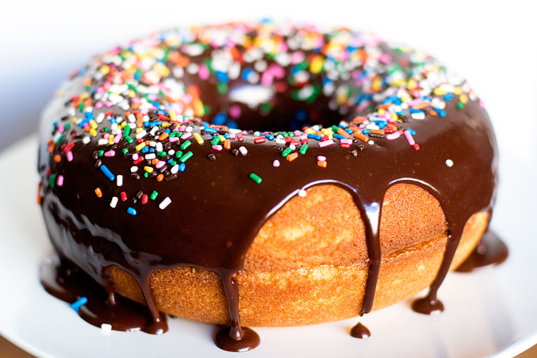

BURGER

A hamburger, or simply burger, is a food consisting of fillings—usually a patty of ground meat, typically beef—placed inside a sliced bun or bread roll.
PIZZA

Pizza is a dish of Italian origin consisting of a usually round, flat base of leavened wheat-based dough topped with tomatoes, cheese, and often various other ingredients
BIRIYANI

A world-renowned Indian dish, biryani takes time and practice to make but is worth every bit of the effort. Long-grained rice (like basmati)s,and a thick gravy.
PASTA
a dish originally from Italy consisting of dough made from durum wheat, extruded or stamped into various shapes and cooked in boiling water, and typically served with a sauce:
DONUTS
A donut is a type of food made from leavened fried dough. It is popular in many countries and is prepared in various forms as a sweet snack that can be homemade franchised specialty vendors.